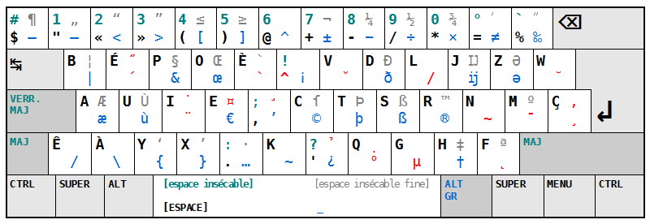
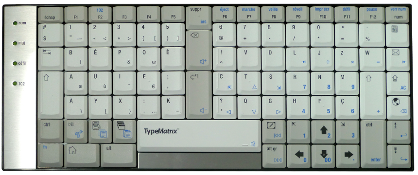

BÉPO
Le clavier qu'il vous faut
Ou comment ne plus avoir mal aux doigts tout en se la pétant grave
Des utilisateurs de claviers ?
Dénoncez-vous !
Pas de chance !
Car votre clavier est une émanation satanique des forces du mal.
Un peu d'histoire ?
Christopher Latham Sholes créé le premier typewriter qui rencontre un succès commercial (fin 1860's)
Résultat ?
Des touches en quinconce
Un clavier qui ne ressemble à rien
L'AZERTY, cette catastrophe
- Touches difficilement accessibles ;
- Caractères manquants («, », œ, …, —, –, É, À, etc.) ;
- Frappe qui nécessite de gros déplacements ;
Heureusement, il-y-a le bépo

Bépo = glop glop !
- Lettres courantes sur les touches accessibles ;
- Maximiser l'alternance des mains ;
- Équilibrer l'effort de frappe ;
- Fournir les caractères des langues européennes ;
Et la disposition physique ?

Le TypeMatrix
- Touches en colonnes ;
- Colonne centrale ;
- Petit, léger, confortable, silencieux ;
Les côtés moins tops
- Temps d'adaptation ;
- Alternance difficile ;
- Vim ;
Est-ce que ça vaut le coup ?
OUI !!!!!
Notez la profusion de points d'exclamation…